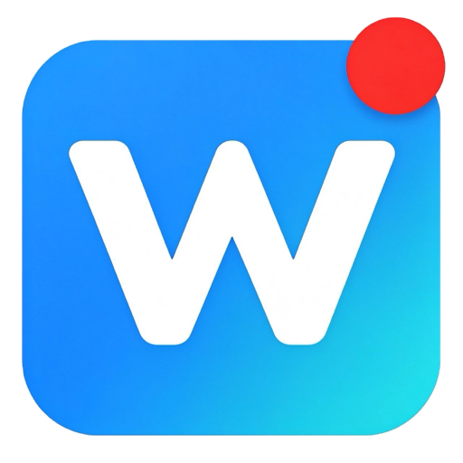

WeScreenPrivacy Policy
Last updated: 2026-10-03 · 最后更新：2026-10-03
Last updated: 2026-10-03
Local processing
WeScreen records selected screens, windows or tabs on your device. It has no account, cloud video storage, analytics, advertising or telemetry. Screen/audio capture starts only after you choose a source. Optional microphone, camera and click highlighting operate only when enabled.
Data and storage
Completed recordings, imported videos, thumbnails, course metadata, markers, processing tasks and recovery chunks are stored in the extension's IndexedDB on this device. Preferences are in chrome.storage.local. The helper access token is stored in a local file and chrome.storage.session. Video is never sent to an external processing service.
Network activity and installation
Recording and library functions work offline. Optional enhancement and crop/trim send the selected video to the authenticated helper at http://127.0.0.1:8765, on this same device. The helper uses local FFmpeg, FSRCNN and optionally installed SeedVR2. Initial dependency/model installation contacts package registries, GitHub and Hugging Face; it does not upload videos. User-initiated Telegram or other links open their respective websites.
Permissions
- storage: save preferences, recorder ownership and temporary token.
- unlimitedStorage: allow the local video library to grow beyond normal origin quota and protect it from eviction. There is no fixed 10 GB library cap; physical disk capacity still applies.
- downloads: export MP4/WebM videos, results and learning notes; show the last export location.
- Optional tabCapture: when you select direct-tab compatibility capture and grant permission, capture only the tab where you invoked WeScreen. Captured audio is played locally.
- activeTab and scripting: insert optional click highlights into the tab where you invoke the extension. This does not grant persistent access to all websites.
- http://127.0.0.1:8765/*: connect only to the local processing helper.
Retention and deletion
Recovery chunks are deleted after a successful archive or explicit discard. Moving a recording to Trash keeps its local video until permanent deletion. Enhanced/edited versions are separate records. Permanently deleting a browser record does not remove an exported disk file. Clearing extension data or uninstalling removes the browser library; export backups first. Normal browser browsing-data clearing does not clear extension-origin storage.
Full processing results and task metadata are retained in enhancement/.runtime/jobs until you explicitly delete them from Processing tasks. They survive helper restarts. Interrupted work is marked failed after restart; rerun from the original video. Input/intermediate files are removed when a task ends; previews are deleted after successful retrieval. Completed exported files remain under your control.
Contact and changes
Updated policies are published at the same URL with a revised date. Questions: https://github.com/susunola/wescreen/issues . WeScreen is a general utility and collects no personal data from children or adults.
最后更新：2026-10-03
本机处理
WeScreen 在你的设备上录制主动选择的屏幕、窗口或标签页，没有账号、云端视频库、统计分析、广告或遥测。录制仅在你通过浏览器选择共享源后开始；麦克风、摄像头与点击高亮仅在启用时工作。
数据与存储
完成的录像、导入视频、缩略图、课程信息、标记、处理任务与恢复分片存放在本机扩展 IndexedDB 中。偏好设置存放在 chrome.storage.local。连接密钥存放在本机文件及 chrome.storage.session。视频不发送到外部处理服务。
网络与安装
录制及录像库可离线使用。可选的画质增强和裁剪剪辑，将所选视频传递到同一台设备的 http://127.0.0.1:8765，通过密钥验证的本机程序处理。程序使用本机 FFmpeg、FSRCNN 与可选 SeedVR2。首次安装依赖/模型会访问软件包源、GitHub 和 Hugging Face，不上传视频。用户主动打开的 Telegram 或其他链接会访问对应网站。
权限
- storage：保存偏好、录制页面归属及临时连接密钥。
- unlimitedStorage：让录像库突破普通来源配额并防止浏览器驱逐；没有固定 10 GB 总量上限，但仍受磁盘容量约束。
- downloads：导出 MP4/WebM、处理结果和学习笔记，查看上次导出位置。
- 可选 tabCapture：仅在选择直采兼容模式并授权后，采集主动打开扩展的标签页；采集音频同时在本机播放。
- activeTab 与 scripting：在主动打开扩展的标签页插入可选点击高亮；不获得全部网站的持续读取权限。
- http://127.0.0.1:8765/*：仅连接本机处理程序。
保留与删除
恢复分片在成功归档或主动丢弃后删除。移入回收站只标记录像，永久删除才移除浏览器中的视频。增强与剪辑版本单独保存。删除浏览器录像不会删除已导出的磁盘文件。清除扩展数据或卸载会移除录像库，请先导出备份；普通清除浏览数据不会清除扩展来源的存储。
完整处理结果与任务信息保存在 enhancement/.runtime/jobs，直到你在“处理任务”中明确删除，重启程序后仍保留。处理中断并重启后，任务标记为失败，可从原视频重做。输入与中间文件在任务结束后清理，预览在成功取回后删除。导出的普通文件由你自行管理。
联系方式与变更
政策更新会在同一网址发布并修改日期。问题可在 https://github.com/susunola/wescreen/issues 提出。WeScreen 是通用工具，不收集儿童或成人的个人数据。